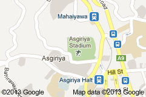
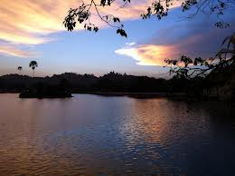

The Kandy Lake
The Kandy Lake, which is the heart of Kandy, adds a unique beauty to the city. This was built in 1807 by the last Sinhalese king of Sri Lanka; Sri Wickrama Rajasinghe. This was called “Kiri Muhuda” or the Milky Ocean. Perimeter of the tank is 2.1 miles where the maximum depth is 60 feet.
The Kandy Lake, which is the heart of Kandy, adds a unique beauty to the city. This was built in 1807 by the last Sinhalese king of Sri Lanka; Sri Wickrama Rajasinghe. This was called “Kiri Muhuda” or the Milky Ocean. Perimeter of the tank is 2.1 miles where the maximum depth is 60 feet.
The lake is surrounded by a wall called “Walakulu Bamma” or the cloud wall which is 2060 feet in length. This wall contains triangular holes which has been used to light oil lamps in the night. One side of the lake it is the temple of Tooth Relic whereas in the other side it is the Malwatte Temple. On the Dalada Maligawa side there is a building which is partially in the lake which was used by queens to bath which is Queens Bathing House. There is a striking little land mass in the middle of the lake. As the history says the king built a dam from the temple of the Tooth Relic to the Malwatte Temple through this island but later he has removed it leaving this island behind.
Swimming is not allowed in the lake. But you can have a boat ride in the lake or you can enjoy a walk around the lake. There are a big variety of trees around the lake. Some of these trees are about 75 years old. On one side of the lake, there is a place that you can hire boats.
 